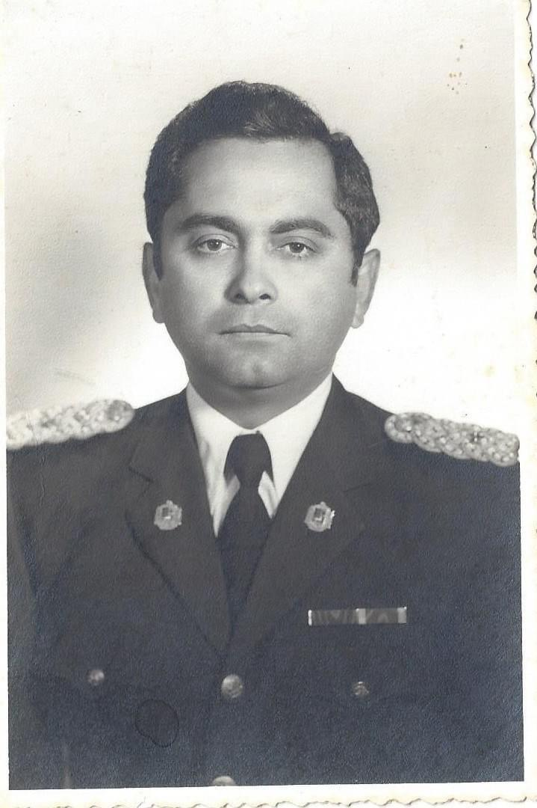

01Orígenes
Cabimas, Mérida y los años de servicio

Humberto Silva Cubillán nació en Cabimas, estado Zulia. Su carrera en la Guardia Nacional lo llevó a Mérida, donde, según recuerda en su crónica sobre la Feria del Sol, dirigió dos años el Destacamento 16 y un año la Policía del Estado. Las tardes de feria le ofrecían una manera de conocer a la comunidad en la que trabajaba. Es un detalle que devuelve la escala cotidiana a una trayectoria que los documentos oficiales registran sobre todo a través de cargos y rangos.
En otro texto recuerda a Phothisarat, un capitán del Ejército de Laos con quien estudió en Fort Monmouth, Nueva Jersey, en 1968. Años después, ese compañero reaparece en una crónica sobre las bombas que quedaron en los arrozales de Laos. El recuerdo personal le da al tema una escala humana. Crónicas del autor